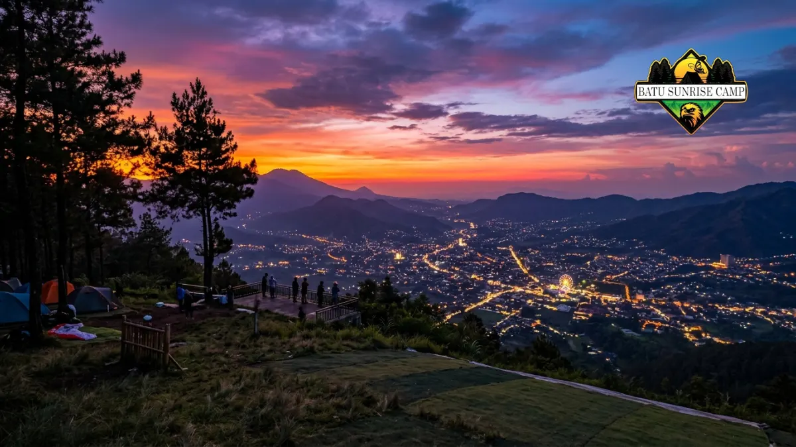

Tempat camping paralayang Batu terbaik berada di kawasan Gunung Banyak, sekitar 1.315 mdpl, dengan spot utama Romantic Camp Bistro dekat area lepas landas paralayang.
Apa Itu Tempat Camping Paralayang Batu?
Tempat camping paralayang Batu adalah kawasan perkemahan yang berada persis di area atau berdekatan dengan lokasi wisata paralayang di Gunung Banyak, Kota Batu, Jawa Timur.
Kawasan ini awalnya dikenal sebagai titik lepas landas olahraga paralayang, sebelum akhirnya berkembang menjadi destinasi kemah karena pelatarannya yang luas dan pemandangannya yang terbuka.
Wisatawan bisa mendirikan tenda sendiri atau menyewa paket camping lengkap dari pengelola setempat.
Primary entity dari kawasan ini adalah area camping ground di sekitar Gunung Banyak, dengan beberapa titik populer seperti Romantic Camp Bistro yang menawarkan gabungan camping, campervan, dan kafe dengan pemandangan kota.
Secondary entity yang relevan mencakup Wisata Paralayang Kota Batu, Omah Kayu atau rumah pohon, serta Gunung Panderman yang berada tidak jauh dari lokasi.
Kawasan ini cocok digunakan oleh keluarga yang ingin camping santai, komunitas outdoor yang ingin kegiatan gathering, maupun pasangan yang mencari suasana romantis dengan pemandangan lampu kota di malam hari.
Waktu yang paling disarankan untuk camping di sini adalah musim kemarau, karena jalur akses dan area tenda lebih kering dan nyaman.
Dimana Lokasi Tempat Camping Paralayang Batu?
Lokasi utama tempat camping paralayang Batu berada di kawasan Gunung Banyak, tepatnya di Jalan Gunung Banyak, Kota Batu, dengan sebagian titik camping juga berada di sekitar Jalan Songgokerto.
Gunung Banyak sendiri berada di ketinggian sekitar 1.315 mdpl dan menjadi lokasi utama olahraga paralayang di Kota Batu.
Beberapa camp ground populer seperti Romantic Camp Bistro berdiri di area yang sama dengan titik lepas landas paralayang, sehingga pengunjung bisa menikmati dua aktivitas sekaligus dalam satu kunjungan.
Kawasan ini juga berdekatan dengan objek wisata lain seperti Omah Kayu atau rumah pohon, serta Gunung Panderman yang menjadi tujuan pendakian populer di Batu.
Kedekatan dengan pusat Kota Batu membuat area ini relatif mudah dijangkau tanpa perlu menempuh perjalanan jauh dari titik-titik wisata utama.
Bagaimana Rute Menuju Lokasi Camping Paralayang Batu?
Rute menuju camping paralayang Batu dapat ditempuh dari Alun-Alun Batu menuju arah Pujon, lalu belok ke Gunung Banyak melalui pertigaan yang sudah memiliki papan penunjuk arah.
Setibanya di Alun-Alun Batu, wisatawan tinggal mengikuti jalan ke arah Pujon hingga bertemu pertigaan yang mengarah ke Gunung Banyak.
Dari pertigaan tersebut, jalan menuju camp ground biasanya sudah dilengkapi papan petunjuk sederhana yang memudahkan pengunjung baru.
Jalan menanjak khas kawasan pegunungan perlu diwaspadai terutama saat kondisi jalan basah atau berkabut, sehingga kendaraan dalam kondisi prima sangat dianjurkan.
Berapa Biaya Camping di Kawasan Paralayang Batu?
Biaya camping di kawasan Paralayang Batu umumnya bervariasi, mulai dari camping mandiri dengan tarif area lebih terjangkau hingga paket lengkap yang mencakup tenda dan perlengkapan tidur.
Sebagai gambaran, salah satu camp ground populer di kawasan ini, Romantic Camp Bistro, menawarkan paket camping dengan biaya mulai sekitar Rp250.000 per orang yang sudah mencakup tenda, matras, kasur, dua bantal, dan dua sleeping bag, menurut laporan IDN Times pada tahun 2024.
Sementara itu, untuk menikmati wisata Paralayang di kawasan yang sama, pengunjung umumnya dikenakan biaya masuk yang jauh lebih terjangkau ditambah biaya parkir kendaraan.
Meski nominal pastinya dapat berubah sewaktu-waktu sehingga sebaiknya dikonfirmasi ulang ke pengelola sebelum berkunjung.
Bagi yang membawa perlengkapan sendiri, biasanya hanya dikenakan biaya masuk area camping tanpa tambahan biaya sewa alat.
Perbedaan harga ini membuat kawasan Paralayang Batu fleksibel untuk berbagai jenis anggaran wisatawan, mulai dari backpacker hingga keluarga yang menginginkan kenyamanan lebih.
Apakah Ada Paket Camping Lengkap dengan Sewa Alat?
Ya, sejumlah camp ground di kawasan Paralayang Batu menyediakan paket sewa alat lengkap sehingga pengunjung tidak perlu membawa tenda maupun perlengkapan tidur sendiri.
Paket semacam ini biasanya mencakup tenda dome, matras, kasur portabel, bantal, dan sleeping bag, yang cocok untuk wisatawan yang datang tanpa perlengkapan kemah pribadi.
Pemesanan lebih awal disarankan terutama saat akhir pekan atau musim liburan, karena kapasitas area camping bersifat terbatas dan permintaan cenderung tinggi pada periode tersebut.
Fasilitas Apa Saja yang Tersedia di Lokasi Camping Paralayang Batu?
Fasilitas di lokasi camping paralayang Batu umumnya mencakup area parkir luas, warung makan, musala, toilet, serta kafe dengan pemandangan kota untuk bersantai sebelum atau sesudah berkemah.
Area wisata Paralayang di Gunung Banyak sudah dilengkapi fasilitas pendukung seperti warung-warung makanan, area parkir kendaraan yang cukup luas, musala untuk beribadah, serta toilet yang terjaga kebersihannya.
Sejumlah camp ground di sekitarnya, seperti Romantic Camp Bistro, juga menambahkan fasilitas kafe dengan konsep aesthetic yang menghadap ke pemandangan perbukitan pada siang hari dan gemerlap lampu kota pada malam hari.
Bagi yang tidak ingin mendirikan tenda, tersedia pula opsi menginap di rumah pohon bernama Omah Kayu yang berada di kawasan Paralayang, menawarkan pengalaman berbeda dengan tetap menikmati pemandangan alam terbuka.
Kapan Waktu Terbaik untuk Camping di Paralayang Batu?
Waktu terbaik untuk camping di Paralayang Batu adalah pada musim kemarau, terutama menjelang sore hingga pagi hari, saat langit cenderung cerah dan pemandangan sunset maupun sunrise terlihat maksimal.
Suasana dingin dan sejuk khas dataran tinggi membuat kawasan ini nyaman dikunjungi kapan saja, namun kondisi cuaca cerah tetap menjadi faktor penting agar pengalaman camping lebih optimal.
Pada musim hujan, jalur menuju lokasi berpotensi licin dan berkabut tebal, sehingga persiapan ekstra seperti jaket tebal dan alas kaki anti-slip sangat dianjurkan.
Momen matahari terbenam maupun panorama lampu Kota Batu di malam hari menjadi daya tarik utama yang membuat banyak wisatawan sengaja menginap semalam, bukan hanya berkunjung sebentar di siang hari.

Pemandangan sunset dari kawasan paralayang Batu.
Apa Saja Kesalahan Umum Saat Camping di Kawasan Paralayang Batu?
Kesalahan umum saat camping di kawasan Paralayang Batu meliputi tidak memesan tempat lebih awal, kurang persiapan pakaian hangat, dan mengabaikan kondisi cuaca sebelum berangkat.
Karena popularitas kawasan ini cukup tinggi, terutama camp ground seperti Romantic Camp Bistro, banyak pengunjung yang datang tanpa reservasi akhirnya kesulitan mendapatkan lokasi tenda saat akhir pekan.
Selain itu, suhu malam hari di ketinggian sekitar 1.315 mdpl bisa terasa cukup dingin, sehingga wisatawan yang tidak membawa jaket tebal atau sleeping bag tambahan sering merasa kurang nyaman.
Kesalahan lain yang cukup umum adalah tidak mengecek kondisi cuaca sebelum berangkat, padahal kawasan pegunungan seperti Gunung Banyak rawan kabut tebal dan hujan mendadak, terutama di luar musim kemarau.
Kesimpulan
Tempat camping paralayang Batu di kawasan Gunung Banyak menawarkan kombinasi udara sejuk, pemandangan kota dari ketinggian, dan akses yang relatif mudah dari pusat Kota Batu.
Bagi yang ingin camping tanpa repot membawa alat, paket lengkap dari camp ground seperti Romantic Camp Bistro bisa menjadi pilihan praktis.
Sebaliknya, bagi yang membawa perlengkapan sendiri, area ini tetap terbuka dengan biaya masuk yang lebih terjangkau.
Pastikan untuk memesan lebih awal saat akhir pekan, membawa pakaian hangat, dan mengecek cuaca sebelum berangkat agar pengalaman camping berjalan lancar.